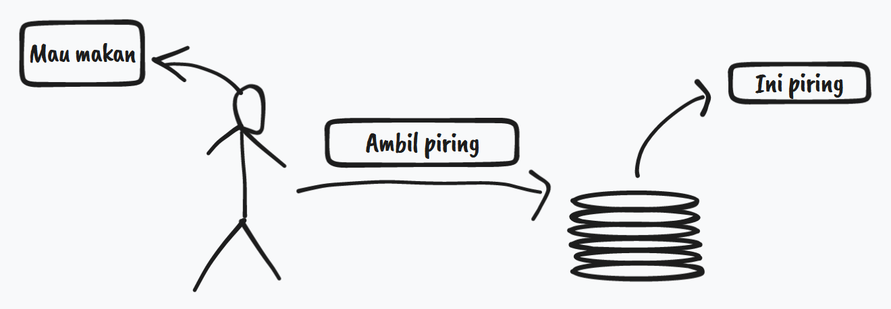
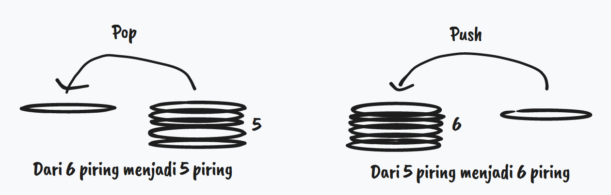

Piring Kotor 🍽
Pernah gak sih kalian bete ngelihat tumpukan piring. Apalagi kalo tumpukan piringnya tuh kotor dan banyak bet. Yah, gw sendiri sering ngalamin hal ini. Orang-orang habis makan, tapi gak dicuci. Tau gak sih cuci piring capek tau, capek bet. Wkwkwk.. kok malah curhat saya 😂
Btw gw lagi cerita tumpukan piring kotor, karena post kali ini akan bahas hal yang berkaitan dengan tumpukan. Dimata orang awam tumpukan itu mungkin jadi masalah, seperti tumpukan piring kotor, tumpukan chat ke gebetan yang gak diread dan dibalas, dan lain-lain. Tetapi tumpukan ini merupakan solusi yang simpel dan efektif dalam beberapa kasus Computer Science. Kalo belom kebayang it's okay, gw akan coba jelasin dari perspektif gw. Jadi tetap stay di web yang gak berfaedah ini.
Tumpukan
Dalam kehidupan kita sehari-hari pasti gak lepas sama yang namanya tumpukan. Gw akan berikan contohnya tumpukan piring, sebagai berikut:
Bayangin ada orang di acara kawinan sebut aja namanya Rehal pengen ngambil makanan yang disajikan dikawinan. Yang dia butuhkan pasti peralatan makan, salah satunya piring, maka dari itu dia akan ambil 1 piring yang berada ditumpukan paling atas. Proses Rehal ngambil piring yang berada ditumpukan paling atas bahasa kerennya push. Dan setelah makan pasti piringnya dibalikin dong, kalo gak dibalikin maling dong. Ngebalikin piringnya akan ditumpuk lagi, dimana piring paling teratas adalah piring terbaru yang kotor atau terakhir ditaruh. Proses ngebalikin piringnya setelah dipake bahasa kerennya push. Proses push dan pop ini adalah dua operasi yang umum pada tumpukan. Btw tumpukan juga punya istilah keren, yaitu stack.
Dalam praktik sebenarnya pada Computer Science masih ada beberapa operasi yang lain, seperti is_empty untuk ngecek tumpukannya kosong atau gak, is_full buat ngecek tumpukannya udah penuh atau belom, dan top/peek untuk ngecek isi tumpukan paling di atas.
LIFO (Last In First Out)
Kalo dilihat dari pola operasi pada stack pada saat melakukan push, piring terakhir yang ditaruh selalu berada diatas tumpukan dan pada proses pop piring yang selalu terambil adalah piring yang posisinya berada paling atas dari tumpukan. Pola tersebut biasa disebut LIFO First In First Out. LIFO sederhananya benda yang paling terakhir ditaruh (push) ditumpukkan akan yang paling pertama terambil (pop).
Terus gunanya buat apa?? 😑
Dalam kehidupan sehari-hari tumpukan ini sebenarnya merupakan solusi, tetapi kita gak sadar kalo tumpukan tuh diterapin di hal tersebut. Berikut beberapa contohnya:
- Tumpukan notifikasi chat dari gebetan.
- Undo aka CRTL-Z dan redo aka CTRL-Y yang ada diaplikasi office.
- Ngecek apakah kurung buka dan tutup valid. () -> valid dan (( -> tidak valid.
Dari beberapa contoh diatas beberapa mungkin terlihat kompleks pemecahannya, tetapi dengan menerapkan tumpukan sebagai solusi, masalah tersebut dapat terpecahkan.